Fundamentals of Linear Control:
A
Concise Approach
Maurício C. de Oliveira
Chapter 8: Performance and Robustness
linearcontrol.info/fundamentals
8.1 Closed-Loop Stability and Performance

Tracking performance
\[\begin{align*} e &= S \bar{y}, & S &= \frac{1}{1 + L}, & L &= G K \end{align*}\]
- Better performance needs \(|S(j \omega)|\) small
- Because \(H(s) + S(s) = 1\) \[\begin{align*} S(j\omega) \approx 0 \text{ means } H(j \omega) \approx 1 \end{align*}\] Beware of measurement noise
- Cannot make \(S(j \omega)\) small for all \(\omega\)
Tracking performance
\[\begin{align*} e &= S \bar{y}, & S &= \frac{1}{1 + L}, & L &= G K \end{align*}\]
High gains makes \(S\) small
\[\begin{align*} |L(j\omega)| &> M \gg 1 & &\implies & |S(j \omega)| &< \frac{1}{M - 1} \end{align*}\]
Small gains make \(S\) one
\[\begin{align*} |L(j\omega)| &\approx 0 & &\implies & |S(j \omega)| &\approx 1 \end{align*}\] e.g. \(L\) is strictly proper \[\begin{align*} \lim_{|s| \rightarrow \infty} |L(s)| &= 0 & &\implies & \lim_{|s| \rightarrow \infty} |S(s)| &= 1 \end{align*}\]
Tracking performance
\[\begin{align*} e &= S \bar{y}, & S &= \frac{1}{1 + L}, & L &= G K \end{align*}\]
What if \(|L(j \omega)| \approx 1\)?
Look at the phase: \[\begin{align*} |L(j\omega)| &\approx 1, \quad \angle L(j\omega) \approx \pi & &\implies & |S(j \omega)| & \text{ is large} \end{align*}\]
\(S\) large makes \(S_M\) small
\(S_M = 1/\sup_\omega |S(j \omega)|\)
Example: control of the simple pendulum
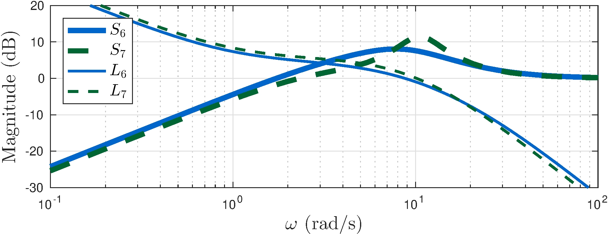
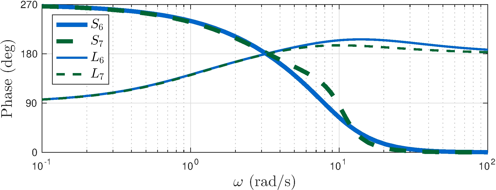
What happens when \(|L(j \omega)| \approx 1\)?
Bode Sensitivity Integral
Theorem 8.1:
\(L\) has poles \(p_i\), \(\operatorname{Re}(p_i) > 0\), \(i = 1, \ldots, k\). If \[\begin{align} \lim_{|s| \rightarrow \infty} s \, L(s) = \kappa, \qquad |\kappa| < \infty \end{align}\] and \(S = (1 + L)^{-1}\) is asymptotically stable then \[\begin{align} \int_{0}^\infty \ln |S(j\omega)| d \omega = \int_{0}^\infty \ln \frac{1}{|1 + L(j\omega)|} d \omega &= \pi \sum_{i = 1}^k p_i - \frac{\pi \kappa}{2} \end{align}\]
Main takeways:
- Closed-loop sensitivity is on a balanced budget
- Unstable systems are hard
- Choose your battles wisely!
See book for more:
- How limited bandwidth makes things harder
- How unstable zeros amplify the effect of unstable poles
8.2 Robustness
Margins
- Gain margin: robustness to changes in gain
- Phase margin: robustness to changes in phase
Robustness analysis
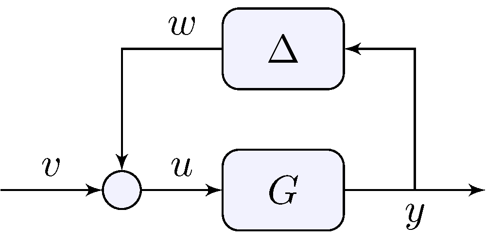
Robustness = asymptotic stability for all \(\Delta \in \boldsymbol{\Delta}\)
Example: control of the simple pendulum
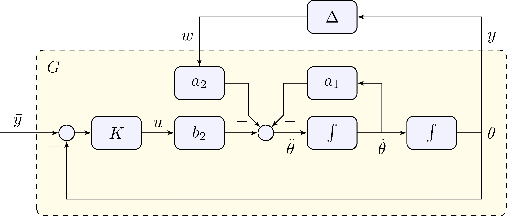
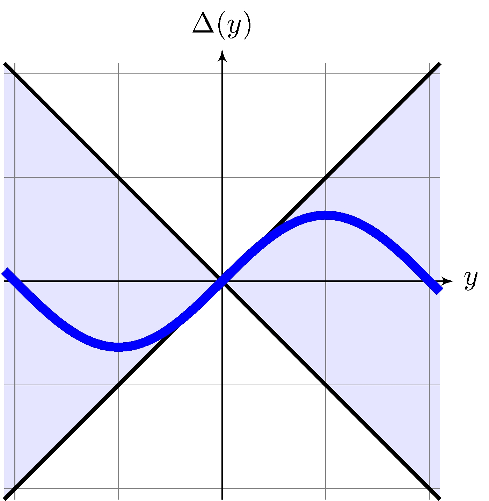
Nonlinearity as an “uncertainty” \[\begin{align*} \Delta(y) &= \sin(y) \end{align*}\]
Uncertainty model \[\begin{align*} \boldsymbol{\Delta} &= \{ \Delta: \mathbb{R} \rightarrow \mathbb{R}, \quad | \Delta(y) | \leq |y| \} \end{align*}\]
8.3 Small Gain
\[\begin{align*} \boldsymbol{\Delta} &= \{ \Delta: \mathbb{R} \rightarrow \mathbb{R}, \quad | \Delta(y) | \leq |y| \} \end{align*}\]
Disturbance
\[\begin{align*} \|w\|_2 = \|\Delta(y)\|_2 &\leq \|y\|_2 \quad \text{ for all } \Delta \in \boldsymbol{\Delta} \end{align*}\]
System
\[\begin{align*} \|y\|_2 &\leq \|G\|_\infty \left ( \|w\|_2 + \| v \|_2 \right ) + M \| x_0 \|_2, & \| G \|_\infty &= \sup_{\omega \in \mathbb{R}} | G(j \omega) | \end{align*}\]
How about the closed-loop?
\[\begin{align*} \boldsymbol{\Delta} &= \{ \Delta: \mathbb{R} \rightarrow \mathbb{R}, \quad | \Delta(y) | \leq |y| \} \end{align*}\]
Small gain theorem
If \(G\) is asymptotically stable and \(\|G\|_\infty < 1\) then \[\begin{align} \|y\|_2 &\leq \frac{\|G\|_\infty}{1 - \|G\|_\infty} \| v \|_2 + \frac{M}{1 - \|G\|_\infty} \|x_0\|_2 \end{align}\]
See book for more:
- Dynamic uncertainty
- Delays
8.4 Control of the Simple Pendulum - Part III
Model for robustness analysis
\[\begin{align} \label{eq:gpendulum} G(s) = \frac{Y(s)}{W(s)} &= \frac{- a_2 F(s)}{1 + b_2 K(s) F(s)}, & F(s) &= \frac{1}{s^2 + a_1 s} \end{align}\]
Data
\[\begin{align} \label{eq:ppars} a_1 &= \frac{b}{J_r} = 0, & a_2 &= \frac{m \, g \, r}{J_r} \approx 49\text{s}^{-2}, & b_2 &= \frac{1}{J_r} \approx 66.7\text{kg}^{-1} \text{m}^{-2} \end{align}\]
Small gain analysis \((\bar{y} = 0)\)
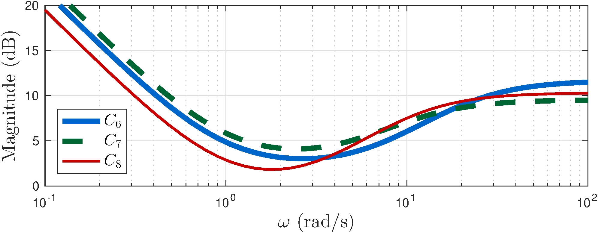
\[\begin{align*} C_6(s) &= 3.83 \frac{(s+0.96)(s+6.86)}{s \, (s+21)} \\ C_7(s) &= 3 \frac{(s+1)(s+5)}{s \, (s+11)} \\ C_8(s) &= 3.28 \frac{(s+1)(s+3)}{s \, (s+10.5)} \end{align*}\]
- \(C_8\): higher gains at higher frequency to lower \(\|G_8\|_\infty\)
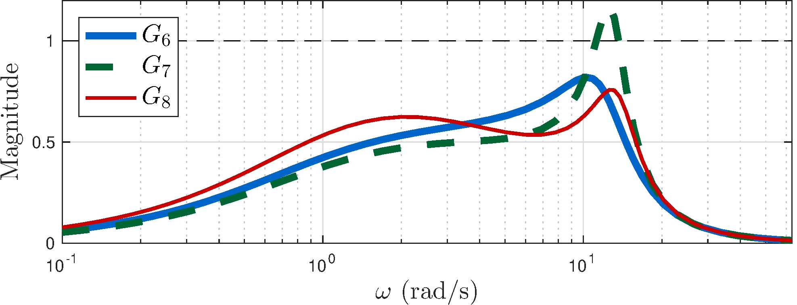
\[\begin{align*} \\[1ex] \| G_6 \|_\infty &\approx 0.82 \\[1ex] \| G_7 \|_\infty &\approx 1.17 \\[1ex] \| G_8 \|_\infty &\approx 0.76 \end{align*}\]
Small gain analysis \((\bar{y} \neq 0)\)
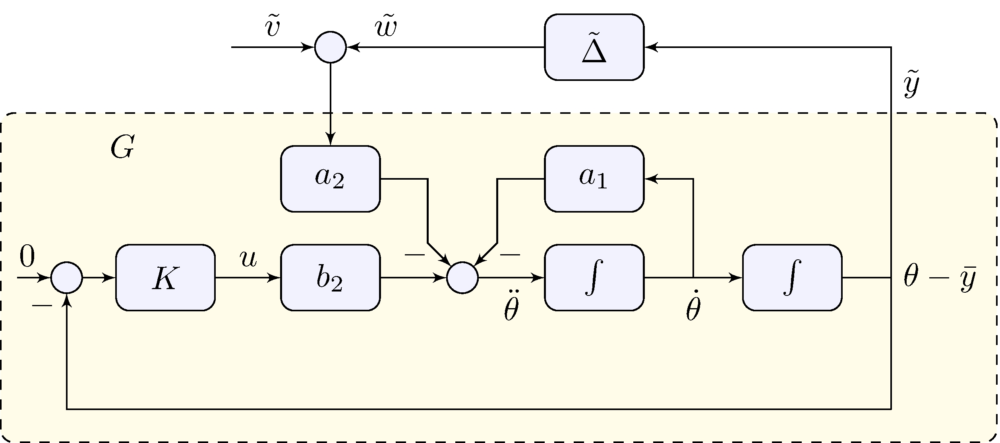
Nonlinearity
\[\begin{align*} \tilde{\Delta}(\tilde{y}) &= \cos(\bar{y}) \sin(\tilde{y}) + \sin(\bar{y}) (\cos(\tilde{y}) - 1), & \tilde{v} &= \sin(\bar{y}) \end{align*}\]
Uncertainty model
\[\begin{align*} \tilde{\boldsymbol{\Delta}} = \boldsymbol{\Delta} &= \{ \Delta: \mathbb{R} \rightarrow \mathbb{R}, \quad | \Delta(y) | \leq |y| \} \end{align*}\]
Stability analysis holds also for tracking!
See book for details and more
8.5 Circle Criterion
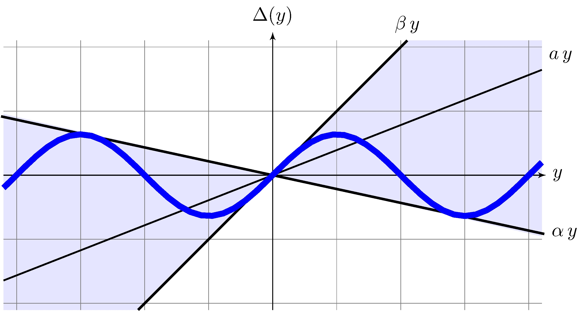
Sector nonlinearities
\[\begin{align*} \boldsymbol{\Delta}_{ab}(a,b) &= \{ \Delta: \mathbb{R} \rightarrow \mathbb{R}, \quad | \Delta(y) + a y | \leq b |y|, \quad b > 0 \}, & (a, b) &= ( {\textstyle\frac{1}{2}}(\alpha + \beta), {\textstyle\frac{1}{2}}(\beta - \alpha) ) \\[1ex] \boldsymbol{\Delta}_{\alpha\beta}(\alpha,\beta) &= \{ \Delta: \mathbb{R} \rightarrow \mathbb{R}, \quad (\Delta(y) - \alpha y)(\Delta(y) - \beta y) \leq 0, \quad \beta > \alpha \}, & (\alpha, \beta) &= (a - b, a + b) \end{align*}\]
Circle Criterion
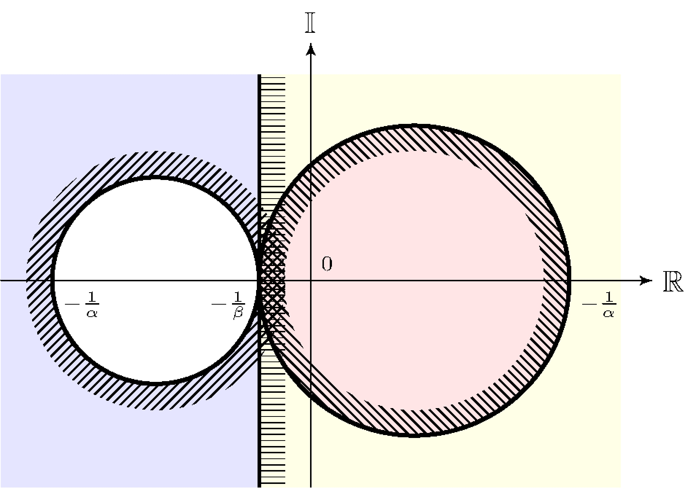
Theorem 8.2
Origin is globally asymptotically stable if either
- \(\beta > 0 > \alpha\), \(G\) is asymptotically stable and the polar plot of \(G\) is inside \(C(\alpha,\beta)\);
- \(\beta > \alpha > 0\), the Nyquist plot of \(G\) encircles \(C(\alpha,\beta)\) \(m\) times but never enters \(C(\alpha,\beta)\).
- \(m\) is the number of unstable poles of \(G\)
Example: control of the simple pendulum
Model for robustness analysis
\[\begin{align} G(s) = \frac{Y(s)}{W(s)} &= \frac{- a_2 F(s)}{1 + b_2 K(s) F(s)}, & F(s) &= \frac{1}{s^2 + a_1 s}, & \alpha &= -0.22, & \beta &= 1 \end{align}\]
Data
\[\begin{align} a_1 &= \frac{b}{J_r} = 0, & a_2 &= \frac{m \, g \, r}{J_r} \approx 49\text{s}^{-2}, & b_2 &= \frac{1}{J_r} \approx 66.7\text{kg}^{-1} \text{m}^{-2} \end{align}\]
Example: control of the simple pendulum
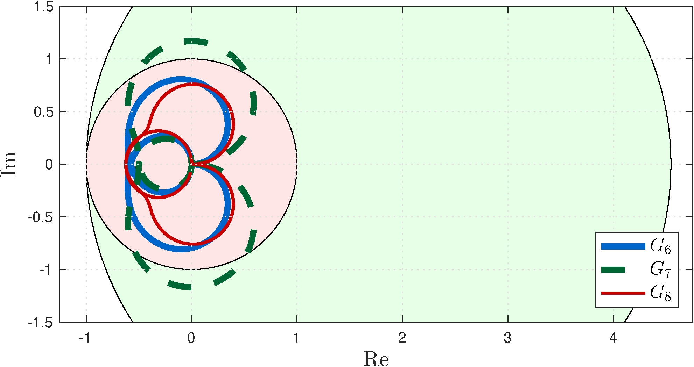
\[\begin{align*} \\[1ex] C_6(s) &= 3.83 \frac{(s+0.96)(s+6.86)}{s \, (s+21)} \\ C_7(s) &= 3 \frac{(s+1)(s+5)}{s \, (s+11)} \\ C_8(s) &= 3.28 \frac{(s+1)(s+3)}{s \, (s+10.5)} \end{align*}\]
Small gain
- \(C(-1, 1)\)
- \(G_7\) fails
Circle criterion
- \(C(-0.22, 1)\)
- All controllers stabilizing
8.6 Feedforward Control and Filtering
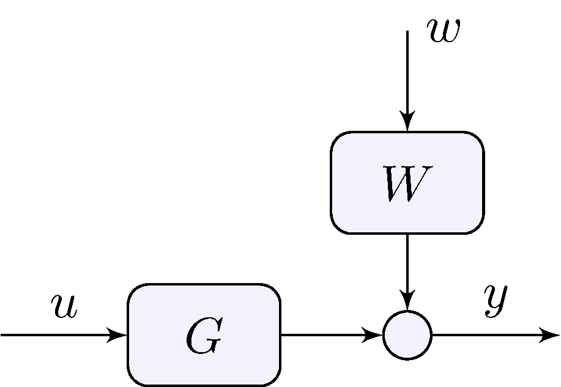
If the “disturbance” \(w\) is known or can be measured feedforward can be combined with feedback
Feedforward control
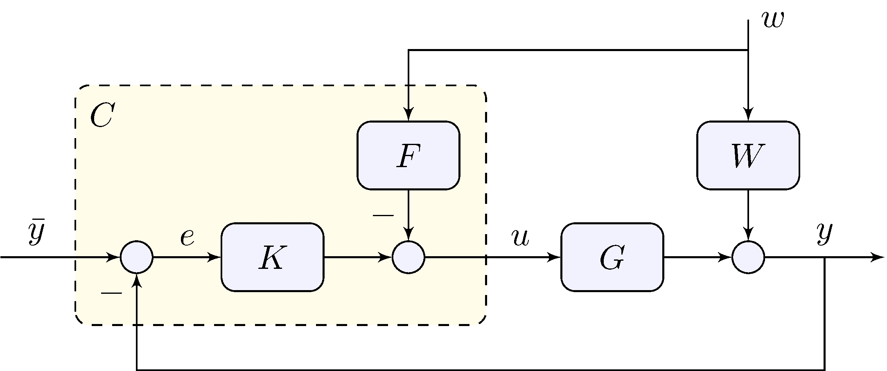
Tracking error
\[\begin{align*} e &= S \, \bar{y} - (W - F \, G ) \, S \, w, & S &= (1 + G \, K)^{-1} \end{align*}\]
Reference feedforward control
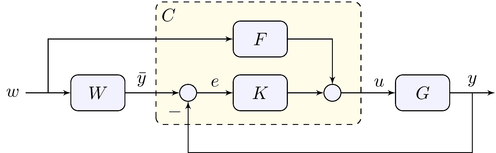
Tracking error
\[\begin{align*} e &= (W - F \, G ) \, S \, w, & S &= (1 + G \, K)^{-1} \end{align*}\]
Feedforward control design
Beware: since \(F\) is in open-loop it has to be asymptotically stable!
If possible
\[\begin{align*} F &= G^{-1} W & & \implies & W &= F G \end{align*}\]
At a given frequency
\[\begin{align*} F(j\omega) &= \lim_{s \rightarrow j \omega} G(s)^{-1} W(s) & \end{align*}\]
Optimal filter
\[\begin{align} \label{eq:filt} \min_{F} \{ \| (W - F G) S \| : \quad F \text{ is asymptotically stable and realizable } \} \end{align}\]
Optimal filtering
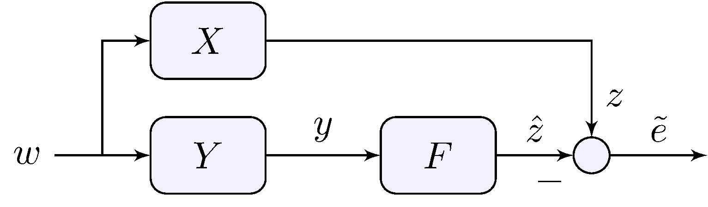
Optimization problem
\[\begin{align} \label{eq:filt2} \min_{F} \{ \| X - F \, Y \| : \quad F \text{ is asymptotically stable and realizable } \} \end{align}\]
See book for simple examples
Optimal filtering
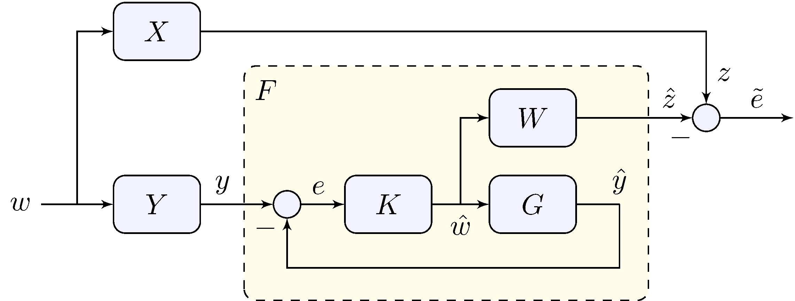
Solution via feedback
\[\begin{align} W &= X, & G &= Y, & \tilde{e} &= W S w, & S &= \frac{1}{1 + G \, K} \end{align}\] e.g. \(K\) or \(G\) have a pole at zero then \(\lim_{t \rightarrow \infty} \tilde{e}(t) = 0\)
This is similar to a Kalman filter
All Stabilizing Controllers
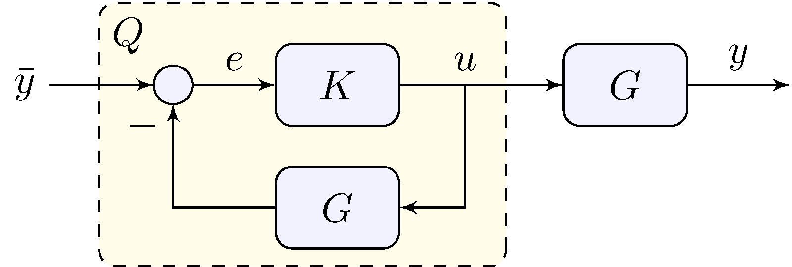
Assumption: \(G\) is asymptotically stable
\[\begin{align*} K &\text{ is stabilizing} & & \implies & Q &= \frac{K}{1 + K \, G} \text{ is asymptotically stable} \\ Q &\text{ is asymptotically stable} & & \implies & K &= \frac{Q}{1 - Q \, G} \text{ is stabilizing} \end{align*}\]
A non-trivial version exists in which \(G\) does not need to be asymptotically stable